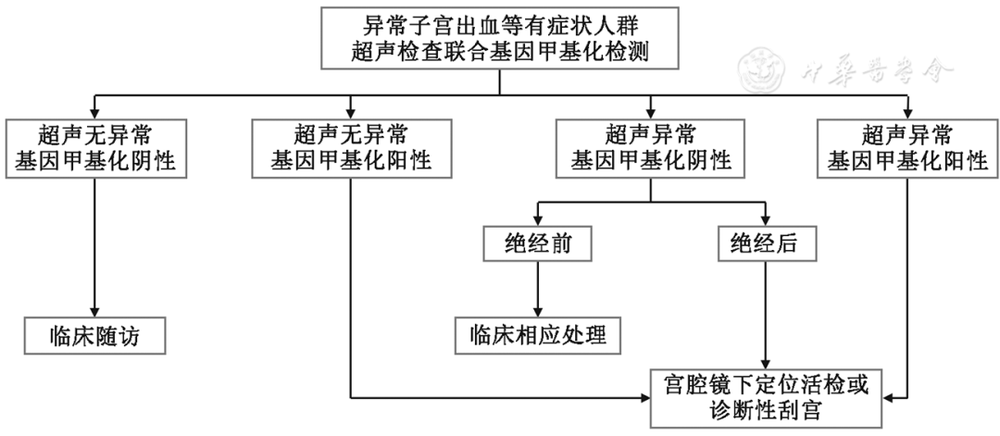
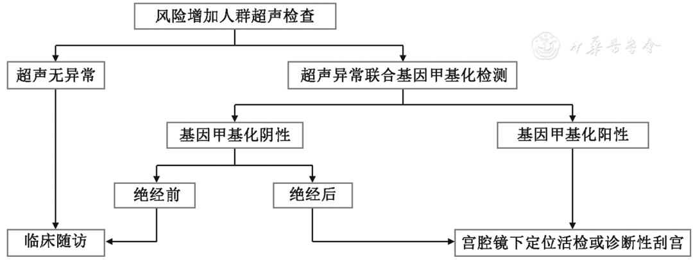
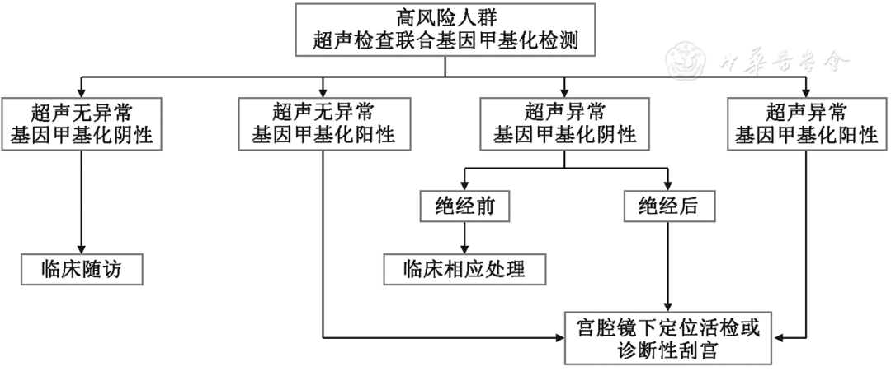

1Background & Framework
84,520
new cases China 2022
17,543
deaths
>90%
early 5-y survival
- Selective screening: unlike cervical general screening, target high-risk groups.
- 2025 NMPA: gene methylation screening approved — fills non-invasive gap.
- Method: WHO manual + Chinese guidance + RIGHT; modified Delphi (≥90% strong, 80–90% recommend).
2Key Questions & Workflow
1
Suitability — screening tech comparison.
2
Sampling — standardized workflow for methylation.
3
Symptomatic — screening strategy.
4
Increased risk — screening strategy.
5
High risk — screening strategy.
6
Management paths — per TVS/methylation result.
Sampling
standardized cells
›
TVS
primary screen
›
Methylation
joint triage
›
Pathology
gold standard
Symptomatic
postmeno bleeding
Increased
>45 y · obesity · metabolic
High risk
Lynch · family
Symptomatic
screen promptly
45+ y
increased-risk start
30–35 y
Lynch surveillance
- TVS limits: ET threshold debate; low specificity in AUB.
- Pathology limits: invasive · sampling failure · focal-lesion miss.
- Methylation edge: non-invasive · objective · fills screening gap.
- Panel: gynecology oncology · pathology · molecular diagnosis · epidemiology.
4 / 11
strong recommendations
7 / 11
recommendations
80–90%
vote threshold
Evidence searched to 2025-12-31; multidisciplinary expert panel (oncology · pathology · epidemiology); 3-yr update plan.
3Recommendations & Decision Matrix
Symptomatic (postmeno bleeding)
Rec 1,4: TVS first + methylation joint screening (strong); Rec 5–6: TVS(−)/M(+) → biopsy; TVS(+)/M(−) postmeno still biopsy.
强推 1,4
Increased risk (>45 y · obesity · metabolic)
Rec 7: annual TVS (strong); Rec 8: TVS(+) → add methylation; M(+) → pathology.
强推 7
High risk (Lynch · family history)
Rec 9: annual TVS + methylation (strong); Rec 10–11: M(+) → biopsy; M(−) → close follow-up + genetic counseling/testing.
强推 9
TVS(−) · M(+)
→ D&C or hysteroscopic biopsy → pathology confirm.
TVS(−) · M(−)
→ follow-up observation (symptomatic); high-risk: close follow-up + genetics.
TVS(+) · M(+)
→ pathology confirmation required (all groups).
TVS(+) · M(−)
→ postmenopausal: still pathology; premenopausal: symptomatic care + close follow-up.
4Screening Flowcharts (Fig 1–4)
3
target populations
11
recommendations
NMPA 2025
approved screening

Fig 2 · Symptomatic (AUB)
Postmeno TVS(+) · M(+) → priority hysteroscopic targeted biopsy.

Fig 3 · Increased risk
Obesity/metabolic — annual TVS; abnormal → methylation → pathology.

Fig 4 · High risk (Lynch)
Annual TVS + methylation; M(+) → biopsy; M(−) → surveillance + genetics.
- Fig 2 (symptomatic): TVS first → methylation joint → biopsy per matrix; postmeno M(+) prioritized for hysteroscopic biopsy.
- Fig 3 (increased risk): annual TVS; abnormal → methylation → pathology; normal → clinical follow-up.
- Fig 4 (high risk): annual TVS + methylation; M(+) → biopsy; M(−) → close surveillance + genetic testing.
Postmenopausal US-abnormal with methylation(+) — treat as high priority: choose hysteroscopic targeted biopsy to avoid missed diagnosis.